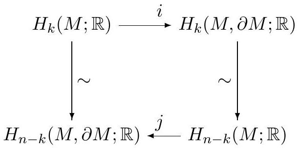

Instructions: This is a four hour exam and closed book. There are nine problems. To get credit for a problem, you must carefully justify all (nontrivial) claims and show all calculations. You may use without proof anything that is proved in the course textbooks, or other standard reference. If you do so, please refer to the theorem by name or give its statement. You may not cite a statement you are explicitly asked to prove, or facts that were given as exercises or homework.
a) Suppose a group
acts on a space
.
Give a precise definition of the statement that
acts properly discontinuously.
b) Recall that
acts freely if for every
,
the only
with the property that
is the identity
.
Prove that a finite group
acting freely on a Hausdorff space
acts properly discontinuously.
Let
be a compact orientable
-manifold
with boundary. It is a fact that for each
,
the groups (vector spaces)
and
are isomorphic. Moreover, an isomorphism may be chosen between them such
that in the diagram

The top horizontal arrow i maps H_k(M; ℝ) to H_k(M, ∂M; ℝ), from left to right. The bottom arrow j maps H_(n−k)(M; ℝ) to H_(n−k)(M, ∂M; ℝ), from right to left. Downward isomorphisms connect the top-left group to the bottom-left group, and the top-right group to the bottom-right group.
Let be a continuous map. The mapping torus of is the quotient space
Find the homology groups
,
if
is a map of degree
.
Suppose the projective plane
is written as a union
where each open set
is homeomorphic to
.
Let
,
for
.
Prove that there exists
such that the intersection
is either disconnected or empty.
Let
and
be connected, locally path connected, and semi-locally simply connected,
and let
and
be simply-connected covering spaces of
and
,
respectively. Prove that if
and
are homotopy equivalent, then so are
and
.
Hint: It may be helpful to use the fact that a map
is a homotopy equivalence if and only if there exist maps
such that
and
are both homotopy equivalences.
Consider
,
the special orthogonal group consisting of
matrices
such that
.
a) Considering the matrix entries as the coordinates on
,
show that
is a smooth submanifold of
.
What is its dimension?
b) Identify the tangent space to
at the identity matrix. Your answer should consist of a precise
description of the set of
-matrices
which forms this tangent space.
c) What is the tangent space to
at any given point
?
Let
be a compact oriented (
)-dimensional manifold with boundary, and let
be a smooth map to a closed, compact, oriented
-manifold
.
Prove that if
extends to a map
then
.
Consider the graph
of the function
.
a) Describe a smooth manifold structure on
.
b) Does there exist a smooth manifold structure on
making it a smooth submanifold of
? (A rigorous justification is required to get full credit!)
a) Let
be a smooth manifold and
and
two smooth submanifolds of
.
Give a precise definition of the statement that
and
intersect transversely.
b) Let
be the unit sphere in
,
and let
be defined by the parametrization
where . Do and intersect transversely? Justify your answer.